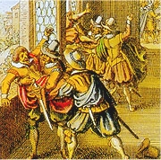

Kostel sv. Vavřince, Jablonné v Podještědí
Jan Brokof: Jan Nepomucký
|
ČESKÉ BAROKO
Po Bílé hoře museli čeští protestanti opustit habsburskou říši, nebo přestoupit ke katolicismu. Řada šlechtických rodů přišla o majetky ve prospěch cizích šlechticů věrných císaři. Masivně se rozšířilo nevolnictví a robota.
Zároveň vznikla řada cenných uměleckých památek. Nejvýznamnějšími barokními architekty byli Kryštof a Kilián Ignác Dientzenhoferové (malostranský Chrám sv. Mikuláše, Loreta) a tvůrce tzv. barokní gotiky (kladrubský klášter, kostel v Sedlci, kaple sv. Jana Nepomuckého na Zelené hoře) Jan Blažej Santini (1677-1723). Matyáš Bernard Braun (1684-1738) je autorem alegorických soch ctnostní a neřestí v Kuksu. Jan a Ferdinand Maxmilián Brokofové osadili sochami světců Karlův most. Světového věhlasu dosáhli malíři Karel Škréta (1610-1674), Jan Kupecký (1667-1740), Petr Brandl (1668-1735) a Václav Vavřinec Reiner (1689-1743). Grafik Václav Hollar (1607-1677) působil v Anglii. Na venkově se rozvíjí tzv. selské baroko (Holašovice) a lidová tvorba.
Jaroměřice nad Rokytnou
|
Historie
Prohra v bitvě na Bílé hoře (1620), poprava vůdců stavovského povstání na Staroměstském náměstí (1621), vydání Obnoveného zřízení zemského (1627) a Vestfálský mír (1648) uvrhly české země do zcela podřízeného postavení v habsburské monarchii. Třicetiletá válka, hladomory a nedobrovolné odchody do exilu zdecimovaly populaci (V Čechách a na Moravě klesl počet obyvatel o celý milion).
Santiniho Kaple sv. Jana Nepomuckého na Zelené hoře
Jan Nepomucký byl svatořečen v 18. stol. Okamžitě se stal oblíbeným českým patronem. Santini mu vystavěl kapli na Zelené hoře. Co dalšího o tomto světci víš?
|
Oficiální katolická tvorba

|
Oficiální katolická tvorba
České umění, školství i věda se staly nástrojem rekatolizace a brzy je ovládli jezuité. Antonín Koniáš (1691-1760) sepsal Klíč kacířské bludy k rozeznání otevírající, k vykořenění zamykající, což byl seznam zakázaných knih (sám jich nechal spálit přes 30 000). Jezuity byli také přední spisovatelé Bedřich Bridel, Bohuslav Balbín, Jan Kořínek nebo Felix Kadlinský, autor sbírky Zdoroslavíček v kratochvilném hájičku postavený.
Velmi oblíbené byly duchovní písně (Narodil se Kristus Pán) i homiletická literatura – mezi významné kazatele patřili
Matěj Václav Šteyer (Postila katolická) a
Bohumír Hynek Josef Bílovský (Cantator cygnus, to jest Hlas duchovní labutě).
|

Braun: Poustevník Garinus (Betlém u Kuksu)
|
Bedřich (Fridrich) Bridel
(1619-1680)
Bridel byl jezuitský misionář. Působil jako profesor rétoriky a poetiky, měl na starost tisk pastoračních knih v pražském Klementinu. Byl pilným překladatelem a sám psal latinsky i česky – Jesličky (kancionál), Život svatého Ivana (legenda) a Co Bůh? Člověk? (báseň). Zemřel na mor, když ošetřoval nemocné v Kutné Hoře.
Jak se ti líbí ukázka z Bridelovy básně?
|
Bedřich Bridel: Co Bůh? Člověk?
Rozsáhlá básnická skladba Co Bůh? Člověk? je vrcholem české barokní poezie. Bridel v ní srovnává Boží velikost s vlastní nicotností.
|
|
Svatý Ivan drží v ruce kříž, který mu daroval Jan Křtitel na ochranu proti démonům.
|
Bedřich Bridel: Život svatého Ivana
V Bridelově legendě o sv. Ivanovi se střídají pasáže psané prózou i veršem. Ivan byl prvním českým poustevníkem. Charvátský princ se nejprve rozhodl pro život v mnišském rouchu, ale později odešel do pohanských Čech a usadil se v jeskyni uprostřed pustého lesa. Společnost mu dělali pouze démoni, kteří ho neúspěšně pokoušeli, a laňka, jejíž mléko pil. Tu ale zasáhl při lovu kníže Bořivoj.
|

Věřící sice uctívali Ivana jako světce, ale oficiálně kanonizován nebyl.
Na místě jeho jeskyně vznikl klášter Svatý Jan pod Skalou.
Jak probíhalo Ivanovo střetnutí se zlými mocnostmi?
|
Adam Michna z Otradovic
(17. století)
Hudební skladatel a básník Adam Michna z Otradovic byl varhaníkem v Jindřichově Hradci. Je autorem sbírek Česká mariánská muzika (mariánské písně), Loutna česká (suita) a Svatoroční muzika (písně o světcích).
Pražská Loreta
|
Adam Michna z Otradovic:
Česká mariánská muzika
Česká mariánská muzika je sbírka duchovních písní. Obsahuje skladby o Ježíši (vánoční i velikonoční), Panně Marii (mariánské) a o umírajících a zemřelých (prosebné). Jelikož to byly písně, nemohl v původním tisku chybět jejich notový zápis.
|

Titulní list České mariánské muziky
Zazpívejte si některou z Michnových písní.
|
Jan Kořínek (1626-1680)

Alegorie hornictví z Kořínkových Starých pamětí kutnohorských
|
Jan Kořínek: Staré paměti kutnohorské
Staré paměti kutnohorské pojednávají především o havířích a hornictví. Obsahují zajímavé údaje o Kutné Hoře i jejích dějinách až do roku 1614. Některé části jsou veršované nebo mají podobu dialogu. Autor si dobře osvojil hornickou mluvu (součástí knihy je slovník havířského slangu). Velmi tendenční jsou pasáže o husitech. Kořínek je pomlouvá, zesměšňuje a překrucuje historickou skutečnost.
|

Škréta: Ignác Jetřich Vitanovský z Vlčkovic
Která ukázka z Kořínkovy knihy tě zaujala nejvíce?
Charakterizuj jednotlivé ukázky z žánrového hlediska.
|
Bohuslav Balbín (1621-1688)

Bohuslav Balbín

Pražská defenestrace z 23. 5. 1618 od Matthäuse Meriana
|
Bohuslav Balbín
Balbín byl jezuitský misionář a učitel, ale po 13 letech musel výuky z nejasných důvodů zanechat. Je autorem latinských knih Výtah z dějin českých, Rozmanitosti z historie Království českého (Svaté Čechy, Učené Čechy...), Nástin humanitních disciplin a O šťastném někdy, nyní však přežalostném stavu království českého, zvláště pak o vážnosti jazyka českého čili slovanského v Čechách, též o záhubných úmyslech na jeho vyhlazení a jiných věcech k tomu příslušejících rozprava krátká, ale pravdivá. Toto dílo, známější jako Obrana jazyka českého, bylo adresováno moravskému kronikáři Tomáši Pešinovi z Čechorodu, který (na rozdíl od Balbína) psal česky. Poprvé vyšlo až v roce 1775 pod latinským názvem Rozprava na obranu jazyka slovanského, zvláště českého, který mu dal obrozenec František Martin Pelcl. Česky vyšla Obrana o dalších sto let později...
|

Alegorická mapa Čech v podobě růže se nachází v Balbínových Rozmanitostech z historie království českého. Rytinu vytvořil Kristián Vetter podle obrazu Pavla Aretina z Ehrenfeldu.
Porovnej jednotlivé ukázky.
Co je obsahem jeho Obrany?
Souhlasíš s Balbínovými názory?
Kteří autoři rovněž vylíčili osudy Jana Nepomuckého? V čem se jejich zpracování liší?
|
Exulantská tvorba protestantů

Hollar: Pohled na Prahu
|
Exulantská tvorba protestantů
Nekatolíci nacházeli útočiště v protestantských zemích (Anglie, Nizozemí...). Nedobrovolný odchod z vlasti ale silně poznamenal jejich tvorbu. Většina knih exulantů se ocitla v Koniášově Klíči. Přesto se tajně pašovaly do Čech, kde zůstávali tajní nekatolíci. Do exilu musel odejít člen jednoty bratrské Jan Amos Komenský, novoutrakvista Pavel Stránský ze Zap, autor latinského pojednání O státě českém (česky vyšlo až v roce 1893), nebo luterán Pavel Skála ze Zhoře (Historie církevní).
|
Jan Amos Komenský
|

Komenský měl velmi pohnutý osud. Narodil se nedaleko Uherského Brodu (Nivnice), ale brzy osiřel. Po studiích v Herbornu a Heidelberku působil jako učitel a duchovní jednoty bratrské ve Fulneku, odkud utekl do Přerova, kde jeho první žena i oba synové zemřeli na mor. V roce 1628 musel odejít do polského Lešna. Stává se posledním biskupem jednoty bratrské a jako uznávaný reformátor školství působí v různých protestantských zemích. Při požáru Lešna (1656) přišel o veškerý majetek, včetně rozepsaných rukopisů. Psal latinsky i česky (Labyrint světa a ráj srdce), především spisy výchovné a náboženské. Pochován je v nizozemském Naardenu.

Orbis sensualium pictus
|
Jan Amos Komenský:
Labyrint světa a ráj srdce
Alegorická skladba Labyrint světa a ráj srdce vypráví o hledání místa ve světě a cestě k Bohu. Poutník prochází zvláštním městem (labyrintem světa). Doprovází ho Všezvěd Všudybud, který mu nasadí uzdu z Všetečnosti a Urputnosti, a Mámení, od něhož dostane brýle z Domnění a Zvyku. Poutník pozoruje různé stavy (řemeslníci, učenci, duchovní, vrchnost...) i povolání (námořníci, právníci, novináři...), ale žádné z nich se mu nezamlouvá. Setkává se s královnou Moudrostí a jejím neúspěšným nápadníkem Šalomounem a nakonec i s Ježíšem Kristem, od kterého definitivně přijímá novou uzdu a brýle. Poutník nenašel ráj srdce v tomto světě, ale ve víře.
Jan Amos Komenský: Didactica magna
Jan Amos Komenský se podílel na reformě školství v Anglii, Švédsku, Uhrách a Nizozemí, proto bývá nazýván učitelem národů. Výchova pro něj byla prostředkem k nápravě světa. Škola má být dílnou lidskosti, výuka musí být názorná a přiměřená věku žáků, může využívat i divadlo (Škola hrou). Učitel by měl postupovat od jednoduššího ke složitějšímu.
Další knihy Jana Amose Komenského
Náboženské: Listové do nebe, Truchlivý, Kšaft umírající matky jednoty bratrské, Kancionál; všenápravné: Via lucis (Cesta světla), De rerum humanarum emendatione consultatio catholica (Obecná porada o nápravě lidských věcí, tzv. Všenáprava); naučné: O poezii české; pedagogické: Janua linguarum reserata (Brána jazyků otevřená), Dvéře jazyků otevřené, Linguarum methodus novissima (Nejnovější metoda jazyků), Didactica, to jest Umění umělého vyučování (vyšlo až roku 1849), Schola ludus (školská dramata), Informatorium školy mateřské.
|

Takto nakreslil labyrint světa sám Jan Amos Komenský. Najdi na obrázku města Bránu života, Bránu rozchodu, ulice šesti stavů, hrad Štěstí, náměstí a sídlo Moudrosti.

Učebnice Orbis senzualium pictus (Svět viditelných věcí v obrazech) se skládá z obrázků s očíslovanými popisky v různých jazycích. Používali ji i čeští jezuité.
Braun: Moudrost
Se kterými názory Komenského souhlasíš a se kterými nesouhlasíš? Proč?
V čem se liší současná výuka od požadavků Komenského?
Co chceš ve své škole změnit? Proč?
Popiš nebo nakresli, jak si představuješ ideální „školu snů“.
|
Písmáci
Alternativou k oficiální katolické literatuře byla tvorba tzv. písmáků, například učitele Václava Františka Kocmánka (1607-1679) nebo rychtáře Františka Jana Vaváka (1741-1816), autora Pamětí.
Selské stavení v Holašovicích
|
Tvorba pololidová
Václav František Kocmánek nechtěl opustit Čechy, a proto konvertoval ke katolicismu. Tento vzdělaný měšťan působil jako kantor a regenschori v Praze. Psal básně o těžkém životě selského lidu, který trpěl válkami (Lamentatio rusticana), morem, nevolnictvím i robotou. Kromě toho je autorem skladeb historických (Píseň o smrti Albrechta z Valdštejna), divadelních her a interludií (O sedlském hňupu chtějícím žákem býti).
V této skladbě je ukrytý text Otčenáše. Přečti ho.
|
Sloup Nejsvětější Trojice v Olomouci
Jaké strázně Kocmánek líčí?
Kdo je jejich původcem?
|
Barokní čeština

Abeceda z Komenského knihy Orbis senzualium pictus
|
Barokní čeština
Barokní čeština byla výrazově velmi bohatá. Autoři čerpali slovní zásobu ze všech slohových vrstev. S oprávněnou kritikou se setkala tzv. alamodová poezie – přejemnělá a plytká literatura plná módních slovíček. V mládí se jí věnoval Václav Jan Rosa (Discursus Lypirona, to jest smutného kavalíra de amore aneb o lásce...), jinak autor mluvnice Čechořečnost. Jazykoví puristé naopak usilovali o čistotu jazyka. Komenského snaha sestavit kompletní latinsko-český slovník Poklad jazyka českého vzala za své při požáru Lešna, vydal tedy pouze sbírku přísloví. Zajímavý je spis Matěje Václava Šteyera
Výborně dobrý způsob, jak se má po česku psáti neb tisknouti. V obrovském nákladu vycházely překlady katechismů,
modlicích knížek (Zlatý nebeklíč) a Písma (Bible svatováclavská).
|
Poznámka: Názvy barokních děl jsou velmi dlouhé (uvádějí stručný obsah knihy i rok vydání), a proto se často zkracují. Některé tvary slov mohou na současné čtenáře působit nespisovně, protože se čeští obrozenci vrátili k renesanční češtině a přeskočili tak několik staletí přirozeného vývoje jazyka.
|
Internetové stránky
Adam Michna, písně
Kocmánek, Šteyer, barokní hry atd.
Věčný pekelný žaltář, Manni, Šteyer
Sláva barokní Čechie, výstava
Selské baroko, prezentace
Holašovice, UNESCO
Habsburkové, informace
Bridel, informace
Bridel, informace
Balbín, informace
Balbín: Obrana
Sochy na vyhynutí, Kuks
Labyrint Project
Hollar, reprodukce
Hollar: Ezopovy bajky, ilustrace
Karlův most, sochy
Sv. Jan Nepomucký
Fantastično v textech barokního kázání
Mapa Čech v podobě růže
Komárek: Loreta, článek
Vlnas: (Svatý) Jan Nepomucký, článek
Exkurze
Karlův most, sochy
Kuks, zámecký areál
Lapidárium, sochy
Klášter sv. Jiří, obrazy
Muzeum J.A.Komenského
Pedagogické muzeum
Sedlec, kostel a kostnice
Klementinum, knihovna
Kladruby, klášter
Svatá hora, Příbram
|
Doporučená četba
Balbín, Bohuslav: Krásy a bohatství české země, přel. H.Businská, Panorama, Praha 1986
Dílo Jana Amose Komenského (18 svazků) Academia
Dějiny českého výtvarného umění II, Od počátku renesance do závěru baroka
Durych, Jaroslav: Bloudění, Rekviem (romány o Valdštejnovi)
Durych, Jaroslav: Služebníci neužiteční (román o jezuitech)
Bridel, Fridrich: Básnické dílo, Torst, Praha 1994
Jirásek, Alois: Psohlavci, Skaláci, Skály, Temno, (historické prózy)
Komenský, Jan Amos: Labyrint světa a ráj srdce
Komenský, Jan Amos: Obecná porada o nápravě věcí lidských (3 svazky), Svoboda
Kořínek, Jan: Staré paměti kutnohorské
Kratochvil, Antonín: Oheň baroka, Cesta, Brno
Kučera, Rak: Bohuslav Balbín a jeho místo v české kultuře, Vyšehrad, Praha 1983
Kumpera, Jan: Jan Amos Komenský
Malý svět jest člověk aneb Výbor z české barokní prózy
Polišenský, Josef: Komenský, Muž labyrintu a naděje
Růže, kterouž smrt zavřela, Výbor z české poezie barokní doby, Odeon, Praha 1970
Skála ze Zhoře, Pavel: Historie česká, Od defenestrace k Bílé hoře
Tichá, Zdeňka: Adam Václav Michna z Otradovic, Melantrich, Praha 1976
Vašica, Josef: České literární baroko, Atlantis, Brno 1995
Vítr jest život člověka aneb Život a smrt v české barokní próze, H&H, Praha 2000
Vlnas, Vít: Jan Nepomucký, česká legenda, Mladá fronta, Praha 1993
Vybrané spisy J.A.Komenského (8 dílů), SPN
Winter, Zikmund: Mistr Kampanus (historický román)
|
Připrav si referát o některé z uvedených knih nebo internetových stránek.

Brandl: Sv. Jáchym a Anna
Výzdoba kaple v Sedlci u Kutné Hory
Které barokní stavby znáš?
|
|